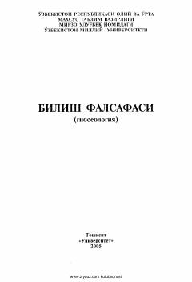

BFGnoseologiya asoslarini o'rgatuvchi oliy ta'lim uchun falsafa darsligi.
Bu kitob gnoseologiya — bilish falsafasi bo'yicha darslik bo'lib, O'zbekiston Milliy Universiteti talabalari uchun mo'ljallangan. Unda jahon falsafasi tarixidagi bilish masalasiga oid turli oqimlar, g'oya va ta'limotlar, bilishning falsafiy mazmuni, haqiqat va amaliyot, zamonaviy gnoseologiyaning dolzarb muammolari qisqacha tahlil qilingan. Kitob Qiyom Nazarov tomonidan tuzilgan va tarjima qilingan bo'lib, 2005-yilda Toshkentda nashr etilgan.